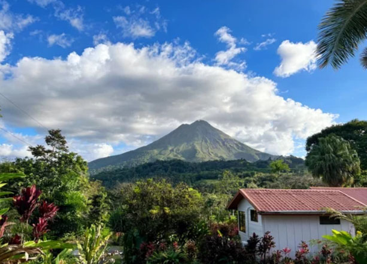
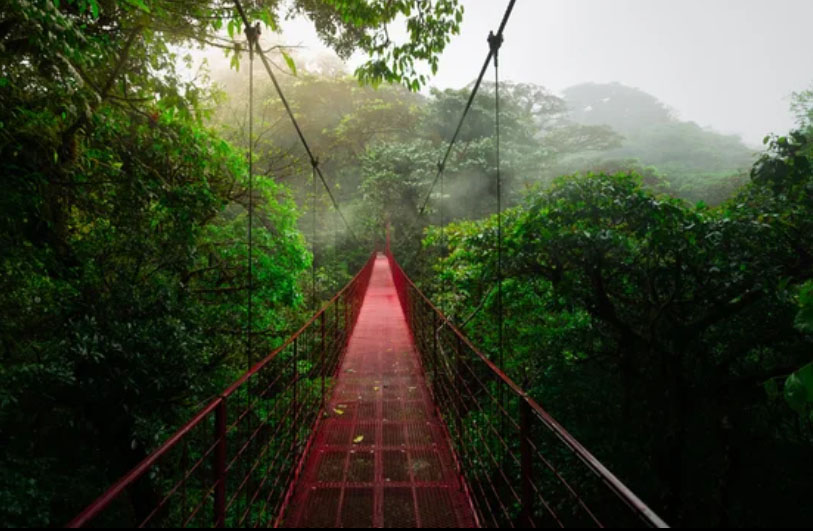
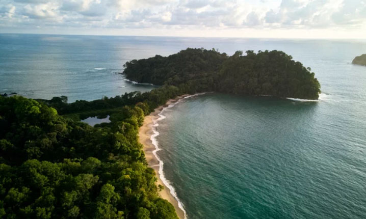
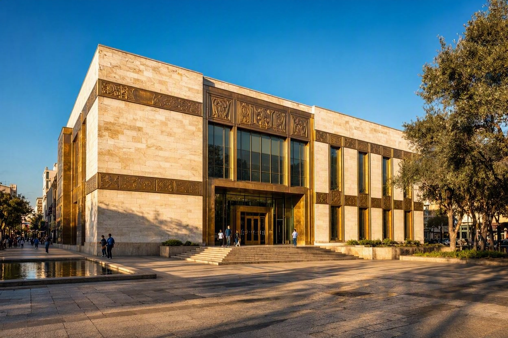
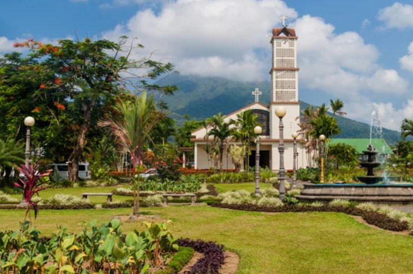
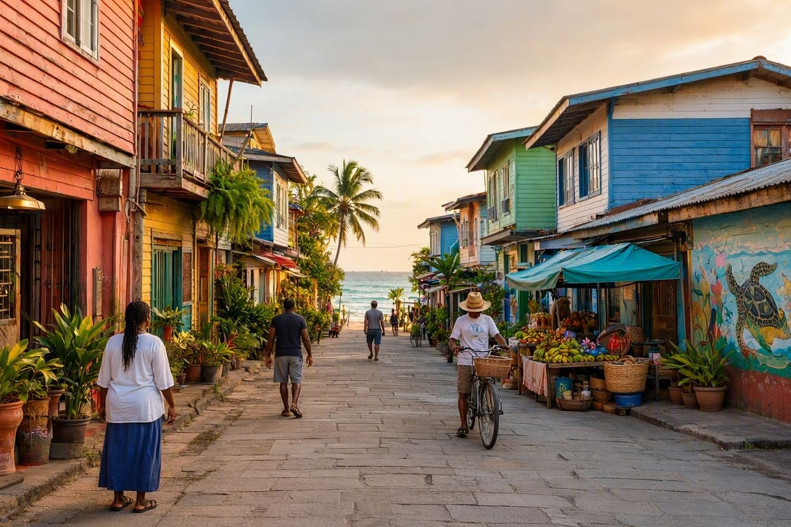

Urban & Wild
Discover the Heartbeats of Costa Rica
From the bustling cultural epicenter of the capital to volcanic adventure hubs and laid-back Caribbean shores, explore the cities that define the Pura Vida lifestyle.
Eternal Green & Living Sanctuaries
Iconic Landmarks
A journey through Costa Rica’s timeless natural soul, where mist-shrouded volcanic peaks meet the vibrant, emerald pulse of pristine wilderness.

Arenal Volcano National Park
A colossal, near-perfect volcanic cone surrounded by jagged ancient lava fields and the emerald pulse of the central highlands.

Monteverde Cloud Forest
A high-altitude paradise draped in persistent emerald fog, where giant moss-covered trees cradle a rare and sacred ecosystem.

Manuel Antonio National Park
A sun-drenched coastal sanctuary where untamed tropical rainforest meets postcard-perfect white sands and turquoise blue waters.
Colonial Echoes & Tropical Rhythms
Cities of Distinction
From the historic European-style avenues of San José to the reggae-infused beach streets of Puerto Viejo, discover towns where vibrant local culture meets the untamed edge of Central American wilderness.

San José
Nestled in the Central Valley, San José is a vibrant mosaic of history, art, and modern urban energy. It serves as the nation's cultural compass, boasting world-class museums, historic theaters, and a burgeoning culinary scene that redefines traditional flavors.

La Fortuna
Where the majestic Arenal Volcano meets dense rainforests, La Fortuna is Costa Rica's premier destination for adrenaline and natural rejuvenation. Spend your days zip-lining through the canopy and your evenings soaking in mineral-rich thermal hot springs.

Puerto Viejo
Experience the soulful, laid-back atmosphere of the southern Caribbean coast. Puerto Viejo offers pristine beaches flanked by jungle, world-class surf breaks like Salsa Brava, and a rich Afro-Caribbean culture expressed through spicy cuisine and reggae rhythms.
The Authentic Flavors of Costa Rica
Discover a culinary landscape rich in fresh ingredients, vibrant colors, and centuries of tradition. From sunrise staples to coastal delicacies, every dish tells a story of the Pura Vida lifestyle.

Gallo Pinto(Breakfast Staple)
The heartbeat of Costa Rican mornings. A masterful blend of day-old rice and black beans, fried together with onions, bell peppers, and fresh cilantro. Often infused with the iconic Lizano sauce for a signature tangy depth.

Tropical Ceviche
Freshly caught sea bass marinated in zesty citrus juices, brightened with finely chopped red onions, sweet peppers, and local herbs. A refreshing burst of the ocean.

El Casado(The Hearty Lunch)
Literally translating to "married," the Casado is a harmonious union of flavors and textures on a single plate. It represents the quintessential Costa Rican midday meal, offering a balanced, hearty, and deeply satisfying experience.
コスタリカ共和国の歴史
Republic of Costa Rica
Costa Rica's history is characterized by its journey from Spanish colonial rule and independence through the Federal Republic of Central America to establishing an advanced democracy and eco-state. Known as the "Miracle of Central America," this transformation was anchored by the permanent abolition of its military in the mid-20th century.
古代・先植民地期
多様な先住民族文化（紀元前1万年頃～）
メソアメリカ文化（マヤなど）と南米文化（インカなど）の結節点として発展。独自の「ディキスの石球」と呼ばれる精巧な石球が作られる。
近世（植民地時代）
コロンブスの到達（1502年）
クリストファー・コロンブスが第4回航海で到達。先住民族が金の装飾品を身につけていたことから「豊かな海岸（コスタリカ）」と命名。
スペインによる統治（1560年代～）
貴金属が見つからず先住民族の人口も少なかったため、大農園（プランテーション）が発達せず、欧州系入植者による自営小農民中心の独特な社会が形成される。
近代（独立と国家形成）
スペインからの独立 （1821年）
中米諸国とともにスペインからの独立を宣言。
中央アメリカ連邦共和国 （1823年～1838年）
連邦に参加するが、内紛による崩壊を経て1838年に完全独立。
コーヒー経済の発展 （19世紀半ば～）
コーヒーの輸出で経済基盤が確立。19世紀末には米国のユナイテッド・フルーツ社によるバナナ栽培も本格化。
近現代（軍隊廃止と民主化）
コスタリカ内戦 （1948年）
大統領選挙の不正を巡り、約40日間におよぶ内戦が勃発。ホセ・フィゲーレス・フェレールが率いる軍隊が勝利し、臨時政府を樹立。
歴史的な新憲法の制定 （1949年）
フィゲーレス臨時大統領のもとで新憲法が制定され、軍隊の恒久的廃止を宣言。軍事予算を教育や医療へ一挙に転換。女性や黒人の参政権も承認。
現代
平和と環境立国への歩み （1980年代～現在）
近隣の中米諸国が内戦に苦しむ中、オスカル・アリアス大統領が「中米平和プラン」を提唱し、1987年にノーベル平和賞を受賞。
現代のエコ先進国
豊かな熱帯雨林や生態系を守るため、国土の約4分の1を自然保護区に指定。エコツーリズムの世界的パイオニアとなり、再生可能エネルギーによる発電比率がほぼ100%に達するなど、世界で最も持続可能な国の一つとして発展を続けている。
中米諸州連合からコスタリカが独立したのは1838年か1848年か
コスタリカが中米連邦（中米諸州連合）から脱退し、独立へ舵を切った年としては1838年と1848年のどちらも歴史的な事実として正しい意味を持ちますが、段階によって捉え方が異なります。
1838年（実質的な脱退・独立）中米連邦の内部崩壊に伴い、コスタリカが連邦からの離脱（主権宣言）を表明した年です。この時点で実質的に独立国家（コスタリカ自由国）として歩み始めました。
1848年（正式な共和国としての完全独立）初代大統領ホセ・マリア・カストロのもとで、国名を正式に「コスタリカ共和国」とし、完全な分離独立を宣言した年です。国旗や国章もこの時に制定されました。
結論として、連邦から「離脱・脱退した年」を指す場合は 1838年。現在の「コスタリカ共和国として正式に完全独立した年」を指す場合は 1848年 となります。
軍隊が勝利したが軍隊の恒久的廃止を宣言
コスタリカの歴史において、「軍隊（反乱軍）が内戦で勝利したにもかかわらず、その勝者が軍隊を恒永久的に廃止した」というのは、世界史的にも非常に珍しく、まさにコスタリカが「中米の奇跡」と呼ばれる最大の理由です。
1. 内戦での「反乱軍」の勝利
1948年、大統領選挙の不正疑惑をきっかけに、コスタリカで大規模な内戦（コスタリカ内戦）が勃発しました。この時、政府軍に対して反旗を翻したのが、ホセ・フィゲーレス・フェレール（愛称ドン・ペペ）が率いる「国家解放軍（反乱軍）」でした。フィゲーレスの軍は激しい戦闘の末に勝利を収め、彼が臨時政府の議長（事実上のトップ）に就任しました。
2. 勝者自身による軍隊の廃止
権力を握ったフィゲーレスは、普通であれば自分の権力を守るために軍隊を強化するところですが、真逆の行動に出ました。彼は内戦終結直後の1948年12月1日、かつて軍の本部だったカルトヘナ要塞の壁を大槌で叩き壊すパフォーマンスを行い、軍隊の廃止を宣言しました（翌1949年の憲法で恒久化）。
3. なぜ勝利した軍が、自ら軍をなくしたのか？
フィゲーレスが軍を廃止した背景には、主に3つの現実的かつ理想的な理由がありました。
クーデターの防止（最大の理由）：当時の中央アメリカでは、軍部がクーデターを起こして独裁政権を作るのが日常茶飯事でした。フィゲーレスは「軍隊が存在すること自体が、将来の民主主義と自分の政権を脅かす最大の敵になる」と見抜いていました。
国家予算を教育と医療へ回すため：貧しい国が軍隊を維持するには巨額の費用がかかります。その予算をすべて「教育」と「医療」に投資することで、国民を豊かにし、国を安定させようと考えました。実際、コスタリカの識字率や医療水準は中米で突出して高くなりました。
アメリカによる安全保障の計算：当時は冷戦期であり、周辺国から侵略されたとしても、最終的には米州相互援助条約（リオ条約）に基づき、アメリカや国際社会が介入して守ってくれるという計算（外交的な安全保障への信頼）もありました。
このように、「軍事力で権力を握ったリーダーが、自らの軍を解体して教育と福祉の国に作り変えた」というパラドックスこそが、コスタリカの民主主義の基盤となっています。
オスカル・アリアス大統領が「中米平和プラン」を提唱し、1987年にノーベル平和賞を受賞。
1980年代、隣国のニカラグアやエルサルバドル、グアテマラなどで激しい内戦が泥沼化し、中米全体が危機に瀕していました。アリアス大統領は、非武装中立を貫くコスタリカの立場から主導権を握り、中米5カ国の首脳をまとめて「中米和平合意（エスキプーラスII合意）」を成立させました。
受賞の理由： 周辺国の紛争を終わらせ、中央アメリカ全体に平和をもたらすための突出した外交努力が評価されました。
ウミガメの鼻にストローが刺さってしまったショッキングなニュースがありましたが。
2015年8月、テキサスA&M大学の研究チーム（海洋生物学者のクリスティーン・フィグナー氏ら）が、コスタリカの太平洋沖でヒメウミガメの調査をしていた際に偶然発見し、動画をYouTubeに投稿。
「その後」のコスタリカ～使い捨てプラスチックの禁止へ
あの動画などをきっかけに、コスタリカ政府は国を挙げて使い捨てプラスチック（ストロー、レジ袋、ペットボトルなど）を削減・禁止する法整備を一気に進めました。
環境モンスター級の取り組み
現在では、リゾート地の多くのカフェやホテルで、プラスチック製のストローは姿を消し、紙製や竹製、または「ストローなし」が当たり前になっています。
世界的な脱プラスチックの引き金に
スターバックスやマクドナルドといった大企業がプラスチック製ストローの廃止・紙製への移行を決めた最大のきっかけが、まさにこの動画でした。
コスタリカ政府の迅速な対応
コスタリカはその後、2019年に使い捨てプラスチックストローを禁止する法律を盛り込むなど、国を挙げた環境規制をさらに強化していきました。